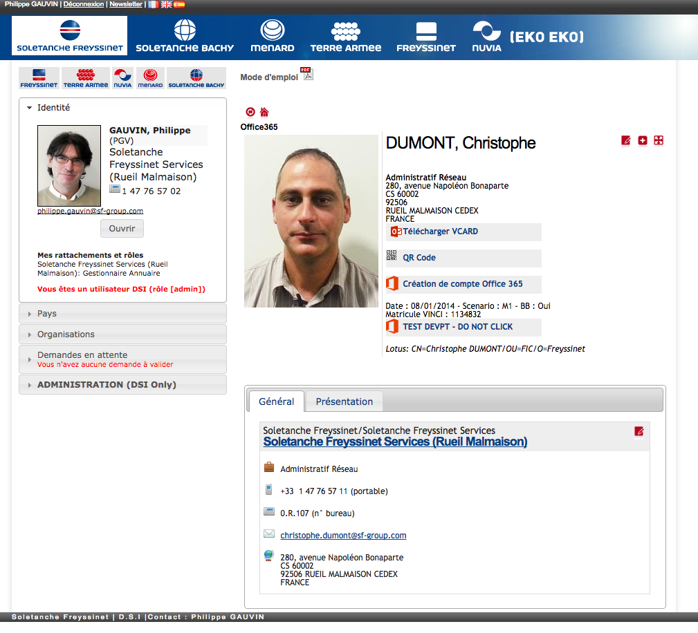
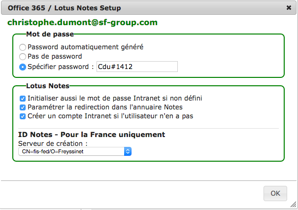

Processus de déclaration de comptes via l'Annuaire RH Soletanche Freyssinet


Gestion du compte Office 365
Création d'une requète d'ouverture de messagerie pour le script

Récupération de la requète par le script
Suppression de la demande dans l'annuaire

Création de la boîte aux lettres
Mot de passe
Positionnement OU dans l'AD
Lotus Notes & Intranet
Création de compte
Mot de passe Intranet
Propriétaire fiche annuaire

Si le compte existe
- L'utilisateur défini comme propriétaire de sa fiche
- Le mot de passe Intranet initialisé si nécessaire

Si aucun compte
- Si serveur : demande de compte Notes
- Sinon : création compte Intranet
PAS DE SERVEUR NOTES DEFINI POUR CREATION ID
Après création du compte Intranet
- Mot de passe O365
- L'utilisateur proprétaire de sa fiche annuaire
SERVEUR NOTES DEFINI POUR CREATION ID
Lorsque base de requète répliquée sur serveur cible
- Demande de création d'un compte Notes.
SERVEUR NOTES DEFINI POUR CREATION ID
Après réplication CA sur SAPP1
- Fiche dans coffre avec l'ID
- Entreprise dans CA
SERVEUR NOTES DEFINI POUR CREATION ID